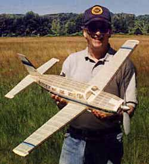

Mark Fineman's Piper Malibu Mirage
Here's another sweet bird from Mark Fineman

Here's another sweet bird from Mark Fineman
"Hi Thayer:
Here's are photos of my new giant scale (43" span) Piper Malibu Mirage. It is a LOT of airplane! Yes, it does fly but is still being tested. The power portion of the flight is spectacular, but the glide is still a bit scary. It probably needs some tail weight.
The model was designed exclusively on CAD, which turned out to be a major undertaking. For starters, the 3-view was all out of whack and had to be corrected before it could be used as a basis for the plan. Inevitably, it was necessary to correct for various errors during construction, but CAD made it easy to make the corrections and to fabricate patterns for new parts. I had originally planned to use a box-and-former type of construction but eventually opted for conventional formers because the shape of the fuselage is much more complex than it appears.
The wing uses a Dave Reese type of construction, with a truss spar providing most of the strength and rigidity. The leading and trailing edges are minimal with sliced ribs (Rhode St. Genese 27) to complete the structure. The tail surfaces are conventional with an Earl Stahl cap strip construction. The prop, a hand-carved 12-inch Stahl formula, has tended to break on hard landings, which may necessitate some sort of folder instead, for shock-absorption, not drag reduction. It flies on three loops of 3/16 tan II FAI.
The model flew almost from the start. It is quite dramatic in flight, as are most large scale models. The power portion is very impressive, but the glide still needs LOTS of work. I suspect the model is nose heavy. Right now I'm waiting for the grass to grow a bit before I tackle it again.
Mark
Mark Fineman can be reached at Fineman@worldnet.att.net
return to